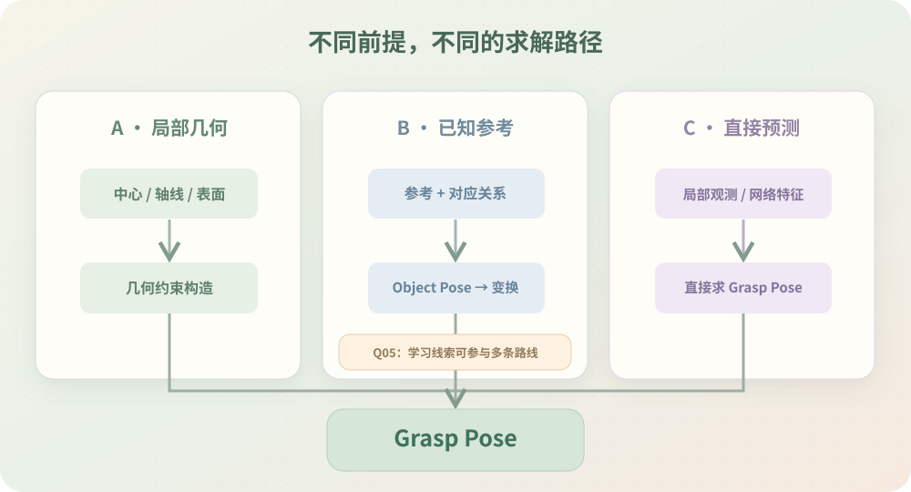

EPILOGUE · WHAT I LEARNED
原来通往 Grasp Pose 的路，
并不只有一条。
回过头看，最初只是想在点云里找一个中心和方向，后来把相机补回来，又研究了学习式线索与直接抓取估计。第一条路没有被否定，只是现在知道还有哪些路可以走。

THREE LITTLE DISCOVERIES
这一路，真正改变了哪三件认识？
01 / GEOMETRY
几何可以提供空间约束。
中心、轴线与表面能帮助构造抓取姿态，但不一定足以确定完整 Object Pose。
02 / OBSERVATION
求解必须面对真实观测。
从相机里找目标、再连接三维，终于让已有求解方法有了实际输入的来路。
03 / MULTIPLE PATHS
步骤不必固定成一条流水线。
学习空间线索、几何构造、参考估计和直接预测可以各自成立，也可以组合。
FIELD MAP / 代价不是算法的新旧
不同的办法，只是在支付不同的代价。
这里不做无依据的优劣排名，只把选择时真正需要留意的条件并排放在一起。
| 路径 | 主要依赖 | 需要留意的代价与边界 |
|---|---|---|
| 局部几何构造 | 可测量、可解释的几何结构 | 噪声、遮挡、对称性、手工约束维护 |
| 已知参考求解 | 尺寸、模型、特征或可靠对应 | 参考准备、匹配条件、初始化与退化情况 |
| 学习空间线索 | 训练数据与合适的表征目标 | 数据覆盖、域变化、可解释性、模型部署 |
| 直接抓取估计 | 局部观测与预定夹爪约束 | 候选可行性、碰撞、执行一致性与泛化 |
注：不同方法可以组合；以上描述的是定性代价来源，不是已经实测的性能排名。
THE SKETCHBOOK
还有三张值得收藏的总结图。
这些是原研究页面已经整理过的主图入口；本地离线浏览仍可以先看这套原型里的矢量图解。


✎ 合上这一站前，留下一句
“现场能得到什么”与“怎样求出 Pose”，值得分别想清楚；但不一定由两个独立模块完成。选择方法之前，先问清已知条件、任务需要的输出，以及愿意承担哪些代价。
这一阶段一直有一个前提：抓取方式已经约定好了。可如果面对踩扁的盒子、卷曲的纸张或柔软包装，连哪里适合夹、应该从哪个方向接近，都很难提前定下来呢？
这次把一个确定的抓法放进空间；下一站，或许就该认真研究怎样选出抓法本身了。
NEXT VOLUME · STAGE 02 / 预告
如果连“怎么抓”都不能提前约定呢？
下一册留给未知物体抓取和抓取方式选择。尚未发布内容，不做无效跳转；可以先回到日记本，或重新翻阅这一站。